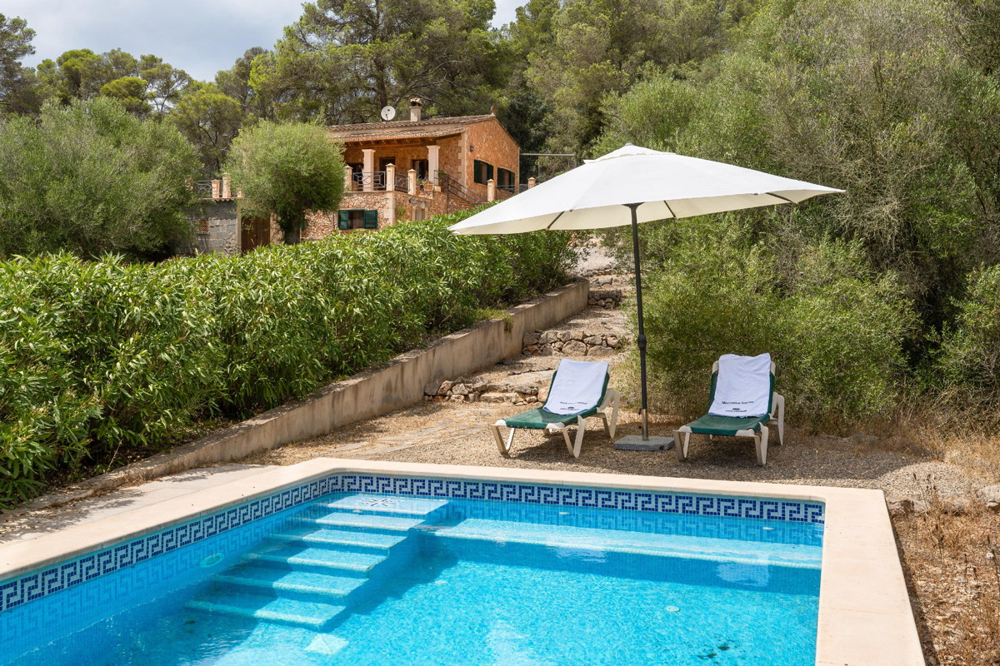

€985.000
Quiet countryside near Llucmajor, Mallorca
Open the listingSouth-island design-forward stone: honey exposed-stone façade with classic green mallorquinas, covered stone-pillar terrace with timber beams, and a finished private pool with Greek-key mosaic. Guest apartment on the lower level; expansive terrace with views toward Cabrera. €985k punches above typical south-island stone-with-pool comps that often clear €1.2M+.
Opened 7 Sep 2026. E&V W-02OV7Q ACTIVE; price €985,000; 3 bed / 3 bath; 191 m² on 7,684 m²; year 1999; hasSwimmingPool true; shop Llucmajor; updated 7 Sep 2026 05:19 UTC. Copy: natural stone façade + fireplace + guest apartment + pool/garden; Cabrera views on clear days. Photos confirm exposed stone + built private pool. Distinct from board llucmajor-loft / llucmajor-garden / llucmajor-stone. Not on prior board.